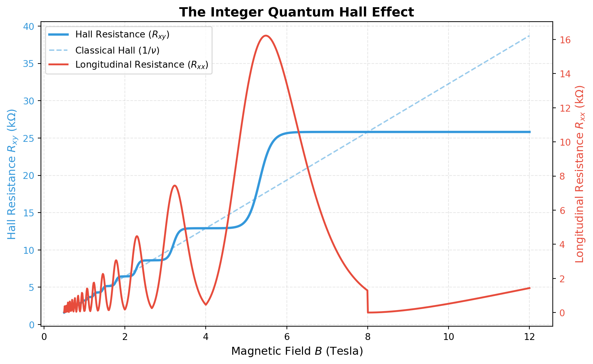

How macroscopic quantum phenomena give rise to perfectly quantized electrical resistance.
Physics
Quantum Mechanics
Condensed Matter
Published
September 7, 2026
In 1980, the German physicist Klaus von Klitzing made a discovery that would fundamentally alter our understanding of condensed matter physics and metrology. While studying two-dimensional electron gases (2DEGs) in silicon MOSFETs at temperatures near absolute zero and under immense magnetic fields, he discovered the Integer Quantum Hall Effect (IQHE).
For this, he was awarded the 1985 Nobel Prize in Physics. But to understand why it was so revolutionary, we first need to look at the classical phenomenon it builds upon.
The Classical Hall Effect
Discovered in 1879 by Edwin Hall, the classical Hall effect occurs when a magnetic field \(\mathbf{B}\) is applied perpendicular to the flow of an electric current \(\mathbf{I}\) in a conductor.
The moving electrons experience a Lorentz force (\(F = -e(\mathbf{v} \times \mathbf{B})\)) that pushes them to one side of the material. This accumulation of charge creates a transverse voltage (the Hall voltage, \(V_H\)) across the conductor.
In classical physics, the Hall resistance (\(R_{xy} = V_H / I\)) is expected to increase linearly with the applied magnetic field: \[R_{xy} = \frac{B}{n e}\] where \(n\) is the 2D charge carrier density and \(e\) is the elementary charge.
The Quantum Hall Effect
When von Klitzing chilled the system to 1.5 Kelvin and cranked the magnetic field up to 15 Tesla, the linear classical line broke down completely.
Instead of rising smoothly, the Hall resistance \(R_{xy}\) formed perfect, flat plateaus. Even more bizarrely, whenever \(R_{xy}\) was on a plateau, the longitudinal resistance \(R_{xx}\) (the resistance in the direction of the current) plummeted to exactly zero. The electrons were flowing without any scattering—perfectly dissipationless transport.
Quantization and the von Klitzing Constant
The plateaus occurred at incredibly precise values given by: \[R_{xy} = \frac{h}{i e^2}\] where \(h\) is Planck’s constant, \(e\) is the elementary charge, and \(i\) is an integer (\(1, 2, 3, \dots\)).
This was shocking. The resistance was entirely independent of the material properties, the geometry of the sample, or the amount of impurities. It depended only on fundamental constants of the universe.
The quantity \(R_K = \frac{h}{e^2} \approx 25,812.807 \ \Omega\) is now known as the von Klitzing constant. It is so precise that since 1990, it has been used as the global standard for defining the ohm.
The Physics: Landau Levels
Why does this happen? In a strong magnetic field, the classical continuous energy spectrum of electrons collapses into highly degenerate, discrete energy levels called Landau levels, separated by the cyclotron energy \(\hbar \omega_c\).
The “filling factor” \(\nu\) represents how many of these Landau levels are completely filled with electrons: \[\nu = \frac{n h}{e B}\]
As you increase the magnetic field \(B\), the capacity of each Landau level increases, causing the higher energy levels to empty out. 1. When the Fermi energy lies exactly in the gap between two Landau levels, the system acts like an insulator in the bulk. 2. Because there are no available states for electrons to scatter into, \(R_{xx} \to 0\). 3. The current is carried entirely by “edge states”—1D channels along the boundaries of the sample where electrons skip along the edge, immune to backscattering.
Let’s visualize this using a programmatic simulation of the phenomenological data.
Code
import numpy as npimport matplotlib.pyplot as plt# Generate Magnetic Field array (0.5 to 12 Tesla)B = np.linspace(0.5, 12, 1000)B0 =8.0# Magnetic field where filling factor nu = 1nu = B0 / B # Filling factorR_xy = np.zeros_like(B)R_xx = np.zeros_like(B)for i inrange(len(B)): n = nu[i]if n <1:# Nu < 1, R_xy is on the nu=1 plateau R_xy[i] =1.0 R_xx[i] =0.5* (1- n)**2else:# Determine which two integers the filling factor is between lower_int =int(np.floor(n)) upper_int = lower_int +1# Transition sharpness (gets sharper at higher magnetic fields) sharpness =15.0/ (n**0.5) # Smooth transition using a tanh function t = np.tanh(sharpness * (n - (lower_int +0.5)))# Calculate Hall Resistance (R_xy) R_xy[i] =0.5* ( (1/lower_int +1/upper_int) - (1/lower_int -1/upper_int) * t )# Calculate Longitudinal Resistance (R_xx) -> Shubnikov-de Haas oscillations peak_center = lower_int +0.5 dist = np.abs(n - peak_center) envelope =0.05* (B[i])**1.5# Peaks get larger at high B width =0.2 R_xx[i] = envelope * np.exp(- (dist**2) / (2* width**2))# von Klitzing constant (kOhms)R_k =25.812# Plottingfig, ax1 = plt.subplots(figsize=(10, 6))color1 ='#3498db'ax1.plot(B, R_xy * R_k, color=color1, lw=2.5, label='Hall Resistance ($R_{xy}$)')ax1.plot(B, (B/B0) * R_k, color=color1, linestyle='--', alpha=0.5, label='Classical Hall ($1/\\nu$)')ax1.set_xlabel('Magnetic Field $B$ (Tesla)', fontsize=12)ax1.set_ylabel('Hall Resistance $R_{xy}$ (k$\\Omega$)', color=color1, fontsize=12)ax1.tick_params(axis='y', labelcolor=color1)ax2 = ax1.twinx()color2 ='#e74c3c'ax2.plot(B, R_xx * R_k, color=color2, lw=2, label='Longitudinal Resistance ($R_{xx}$)')ax2.set_ylabel('Longitudinal Resistance $R_{xx}$ (k$\\Omega$)', color=color2, fontsize=12)ax2.tick_params(axis='y', labelcolor=color2)# Legends and gridlines1, labels1 = ax1.get_legend_handles_labels()lines2, labels2 = ax2.get_legend_handles_labels()ax2.legend(lines1 + lines2, labels1 + labels2, loc='upper left')plt.title('The Integer Quantum Hall Effect', fontsize=14, fontweight='bold')ax1.grid(True, alpha=0.3, linestyle='--')plt.show()

Figure 1: Simulation of the Integer Quantum Hall Effect. Notice how the Hall Resistance (blue) forms quantized plateaus exactly where the Longitudinal Resistance (red) drops to zero.
Fractional Quantum Hall Effect (FQHE)
In 1982, Horst Störmer and Daniel Tsui pushed the magnetic fields even higher and used even purer gallium arsenide samples. Shockingly, they found new plateaus at fractional filling factors, such as \(\nu = 1/3, 2/5, 3/7\).
Robert Laughlin later explained this theoretically: the intense magnetic field forces the electrons to interact so strongly that they condense into a completely new state of matter—an incompressible quantum fluid. The quasiparticles in this fluid (known as composite fermions) consist of an electron bound to magnetic flux quanta, and incredibly, they carry a fractional electrical charge (like \(e/3\)). Tsui, Störmer, and Laughlin shared the 1998 Nobel Prize for this discovery.
Today, the Quantum Hall Effect remains a gateway into the fascinating world of topological insulators and quantum computation, proving that the vacuum and the 2D plane hold secrets far stranger than classical physics could have ever predicted.